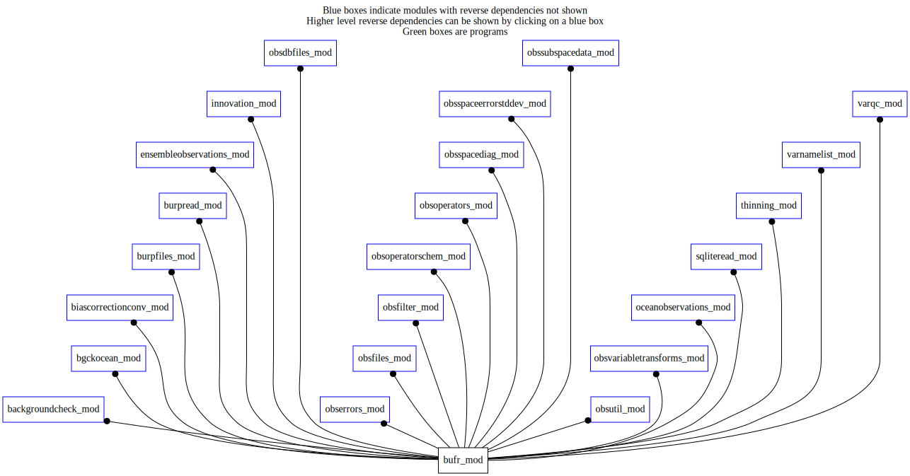

Dependency Diagrams:
No Direct Dependency
 Reverse Dependency Diagram¶
Description
MODULE bufr_mod (prefix=’bufr’ category=’8. Low-level utilities and constants’)
- Purpose
This module is a holder for information that is needed from the Binary Universal Form for the Representation of meteorological data (BUFR), maintained by the World Meteorological Organization
Quick access
- Variables
bufr_avgkern,bufr_cloudinseg,bufr_correl,bufr_dewpoint2m,bufr_gust,bufr_icec,bufr_icep,bufr_ices,bufr_icev,bufr_logradarprecip,bufr_logvis,bufr_nbt1,bufr_nbt2,bufr_nbt3,bufr_neal,bufr_neaz,bufr_nebd,bufr_nech_ch4,bufr_nech_co,bufr_nech_co2,bufr_nech_h2o,bufr_nech_hcho,bufr_nech_n2o,bufr_nech_nh3,bufr_nech_no,bufr_nech_no2,bufr_nech_o3,bufr_nech_pm10,bufr_nech_pm25,bufr_nech_so2,bufr_nedd,bufr_neds,bufr_nedw,bufr_nedwdp,bufr_nedwdt,bufr_nedz,bufr_nees,bufr_nefe,bufr_neff,bufr_nefs,bufr_negz,bufr_nehs,bufr_nehu,bufr_nepn,bufr_nepp,bufr_neps,bufr_nerf,bufr_ness,bufr_nets,bufr_nett,bufr_neus,bufr_neuu,bufr_nevs,bufr_nevv,bufr_nezd,bufr_nezw,bufr_radarprecip,bufr_radvel,bufr_riverflow,bufr_scale_exponent,bufr_soz,bufr_sst,bufr_suwindspeed,bufr_unit_airdensity,bufr_unit_density,bufr_unit_density2,bufr_unit_du,bufr_unit_du2,bufr_unit_du3,bufr_unit_du4,bufr_unit_extinctcoef,bufr_unit_integdens,bufr_unit_integdens2,bufr_unit_integdens3,bufr_unit_integmolardens,bufr_unit_integnd,bufr_unit_integnd2,bufr_unit_mmr,bufr_unit_mmr2,bufr_unit_molardensity,bufr_unit_molepermole,bufr_unit_molepermole2,bufr_unit_mr_nvaerosol,bufr_unit_numberdensity,bufr_unit_optdepth,bufr_unit_optdepth2,bufr_unit_optdepth3,bufr_unit_partpress,bufr_unit_partpress2,bufr_unit_photodissoc,bufr_unit_pmdensity,bufr_unit_vmr,bufr_unit_vmr2,bufr_vis,bufr_ztdscore- Routines
bufr_isatmosconstituent(),bufr_isintegral(),bufr_isoceanobs(),bufr_iswindcomponent()Variables
- bufr_mod/bufr_avgkern [integer,public/parameter]¶
- bufr_mod/bufr_cloudinseg [integer,public/parameter]¶
- bufr_mod/bufr_correl [integer,public/parameter]¶
- bufr_mod/bufr_dewpoint2m [integer,public/parameter]¶
Dewpoint temperature at 2m
- bufr_mod/bufr_gust [integer,public/parameter]¶
- bufr_mod/bufr_icec [integer,public/parameter]¶
concentration (%) from ice charts
- bufr_mod/bufr_icep [integer,public/parameter]¶
concentration (%) from passive microwave retrievals
- bufr_mod/bufr_ices [integer,public/parameter]¶
backscatter anisotropy from scatterometer
- bufr_mod/bufr_icev [integer,public/parameter]¶
presence of ice retrieval from Vis/IR
- bufr_mod/bufr_logradarprecip [integer,public/parameter]¶
radar precipitation
- bufr_mod/bufr_logvis [integer,public/parameter]¶
log(horizontal visibility)
- bufr_mod/bufr_nbt1 [integer,public/parameter]¶
- bufr_mod/bufr_nbt2 [integer,public/parameter]¶
- bufr_mod/bufr_nbt3 [integer,public/parameter]¶
- bufr_mod/bufr_neal [integer,public/parameter]¶
aladin HLOS wind
- bufr_mod/bufr_neaz [integer,public/parameter]¶
- bufr_mod/bufr_nebd [integer,public/parameter]¶
- bufr_mod/bufr_nech_ch4 [integer,public/parameter]¶
- bufr_mod/bufr_nech_co [integer,public/parameter]¶
- bufr_mod/bufr_nech_co2 [integer,public/parameter]¶
- bufr_mod/bufr_nech_h2o [integer,public/parameter]¶
- bufr_mod/bufr_nech_hcho [integer,public/parameter]¶
- bufr_mod/bufr_nech_n2o [integer,public/parameter]¶
- bufr_mod/bufr_nech_nh3 [integer,public/parameter]¶
- bufr_mod/bufr_nech_no [integer,public/parameter]¶
- bufr_mod/bufr_nech_no2 [integer,public/parameter]¶
- bufr_mod/bufr_nech_o3 [integer,public/parameter]¶
- bufr_mod/bufr_nech_pm10 [integer,public/parameter]¶
- bufr_mod/bufr_nech_pm25 [integer,public/parameter]¶
- bufr_mod/bufr_nech_so2 [integer,public/parameter]¶
- bufr_mod/bufr_nedd [integer,public/parameter]¶
- bufr_mod/bufr_neds [integer,public/parameter]¶
- bufr_mod/bufr_nedw [integer,public/parameter]¶
Doppler wind
- bufr_mod/bufr_nedwdp [integer,public/parameter]¶
derivative of HLOS wrt P
- bufr_mod/bufr_nedwdt [integer,public/parameter]¶
derivative of HLOS wrt T
- bufr_mod/bufr_nedz [integer,public/parameter]¶
- bufr_mod/bufr_nees [integer,public/parameter]¶
- bufr_mod/bufr_nefe [integer,public/parameter]¶
- bufr_mod/bufr_neff [integer,public/parameter]¶
- bufr_mod/bufr_nefs [integer,public/parameter]¶
- bufr_mod/bufr_negz [integer,public/parameter]¶
- bufr_mod/bufr_nehs [integer,public/parameter]¶
- bufr_mod/bufr_nehu [integer,public/parameter]¶
- bufr_mod/bufr_nepn [integer,public/parameter]¶
- bufr_mod/bufr_nepp [integer,public/parameter]¶
- bufr_mod/bufr_neps [integer,public/parameter]¶
- bufr_mod/bufr_nerf [integer,public/parameter]¶
- bufr_mod/bufr_ness [integer,public/parameter]¶
- bufr_mod/bufr_nets [integer,public/parameter]¶
- bufr_mod/bufr_nett [integer,public/parameter]¶
- bufr_mod/bufr_neus [integer,public/parameter]¶
- bufr_mod/bufr_neuu [integer,public/parameter]¶
- bufr_mod/bufr_nevs [integer,public/parameter]¶
- bufr_mod/bufr_nevv [integer,public/parameter]¶
- bufr_mod/bufr_nezd [integer,public/parameter]¶
- bufr_mod/bufr_nezw [integer,public/parameter]¶
- bufr_mod/bufr_radarprecip [integer,public/parameter]¶
radar precipitation
- bufr_mod/bufr_radvel [integer,public/parameter]¶
Doppler velocity (Radial Wind)
- bufr_mod/bufr_riverflow [integer,public/parameter]¶
- bufr_mod/bufr_scale_exponent [integer,public/parameter]¶
- bufr_mod/bufr_soz [integer,public/parameter]¶
- bufr_mod/bufr_sst [integer,public/parameter]¶
sea/water temperature
- bufr_mod/bufr_suwindspeed [integer,public/parameter]¶
source and units of wind speed IW, code 1855, code table
- bufr_mod/bufr_unit_airdensity [integer,public/parameter]¶
Air density (kg/m^3)
- bufr_mod/bufr_unit_density [integer,public/parameter]¶
Concentration in kg/m^3
- bufr_mod/bufr_unit_density2 [integer,public/parameter]¶
Concentration = Density (kg/m^3)
- bufr_mod/bufr_unit_du [integer,public/parameter]¶
Integrate number density in Dobson units DU
- bufr_mod/bufr_unit_du2 [integer,public/parameter]¶
Total ozone in DU (same as above) - applicable for all
- bufr_mod/bufr_unit_du3 [integer,public/parameter]¶
Partial column for ozone in DU (same as above) - applicable for all
- bufr_mod/bufr_unit_du4 [integer,public/parameter]¶
Partial column for SO2 in DU (same as above) - applicable for all
- bufr_mod/bufr_unit_extinctcoef [integer,public/parameter]¶
Extinction coefficient (1/m)
- bufr_mod/bufr_unit_integdens [integer,public/parameter]¶
Integrated density (kg/m^2)
- bufr_mod/bufr_unit_integdens2 [integer,public/parameter]¶
Integrated density for ozone (kg/m^2; same as above) - applicable to all
- bufr_mod/bufr_unit_integdens3 [integer,public/parameter]¶
Integrated density (kg/m^2)
- bufr_mod/bufr_unit_integmolardens [integer,public/parameter]¶
Integrated molar density (mole/m^2)
- bufr_mod/bufr_unit_integnd [integer,public/parameter]¶
Integrated number density (1/m^2)
- bufr_mod/bufr_unit_integnd2 [integer,public/parameter]¶
Electron density per m^2 (1/m^2)
- bufr_mod/bufr_unit_mmr [integer,public/parameter]¶
Mass mixing ratio (kg/kg)
- bufr_mod/bufr_unit_mmr2 [integer,public/parameter]¶
Humidity mass mixing ratio (kg/kg) - same as above
- bufr_mod/bufr_unit_molardensity [integer,public/parameter]¶
Molar density (mole/m^3)
- bufr_mod/bufr_unit_molepermole [integer,public/parameter]¶
Pollutant concentration (mole/mole)
- bufr_mod/bufr_unit_molepermole2 [integer,public/parameter]¶
Mixing ratio (mole/mole)
- bufr_mod/bufr_unit_mr_nvaerosol [integer,public/parameter]¶
Non-volatile aerosol mixing ratio (unitless)
- bufr_mod/bufr_unit_numberdensity [integer,public/parameter]¶
Number density (1/m^3)
- bufr_mod/bufr_unit_optdepth [integer,public/parameter]¶
Optical depth (unitless)
- bufr_mod/bufr_unit_optdepth2 [integer,public/parameter]¶
Optical depth (unitless)
- bufr_mod/bufr_unit_optdepth3 [integer,public/parameter]¶
Aerosol Optical depth (unitless)
- bufr_mod/bufr_unit_partpress [integer,public/parameter]¶
Partial pressure in Pa (not just for ozone)
- bufr_mod/bufr_unit_partpress2 [integer,public/parameter]¶
Partial pressure in Pa (same as above)
- bufr_mod/bufr_unit_photodissoc [integer,public/parameter]¶
Photodissociate rate (1/sec)
- bufr_mod/bufr_unit_pmdensity [integer,public/parameter]¶
Density of PM2.5 (kg/m^3)
- bufr_mod/bufr_unit_vmr [integer,public/parameter]¶
Volume mixing ratio (vmr)
- bufr_mod/bufr_unit_vmr2 [integer,public/parameter]¶
Volume mixing ratio
- bufr_mod/bufr_vis [integer,public/parameter]¶
horizontal visibility
- bufr_mod/bufr_ztdscore [integer,public/parameter]¶
Subroutines and functions
- function bufr_mod/bufr_isatmosconstituent(varnumber)¶
- Purpose
To determine whether ‘varNumber’ refers to constituent data from the CH family with recognized data units.
- Arguments
varnumber [integer ,in] :: BUFR element number
- Return
var_chm [logical ]
- Called from
- function bufr_mod/bufr_isintegral(varnumber)¶
- Purpose
To identify whether obs is a vertically integrated constituent measurement.
- Arguments
varnumber [integer ,in] :: BUFR element number
- Return
bufr_isintegral [logical ]
- Called from
- function bufr_mod/bufr_iswindcomponent(varnumber)¶
- Purpose
True if the variable is a wind component
- Arguments
varnumber [integer ,in] :: BUFR element number
- Return
bufr_iswindcomponent [logical ]
- Called from
- function bufr_mod/bufr_isoceanobs(varnumber)¶
- Purpose
True if the variable is an ocean observation
- Arguments
varnumber [integer ,in] :: BUFR element number
- Return
bufr_isoceanobs [logical ]
- Called from
{kind=link}